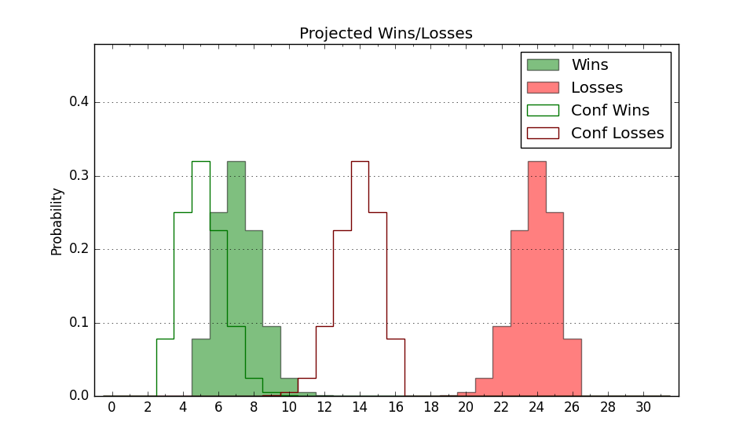

| Home | Game Probabilities | Conferences | Preseason Predictions | Odds Charts | NCAA Tournament |
| City: | Ypsilanti, Michigan | |
| Conference: | Mid-American (8th)
| |
| Record: | 3-6 (Conf) 5-16 (Overall) | |
| Ratings: | Comp.: -14.0 (317th) Net: -14.0 (318th) Off: 99.9 (222nd) Def: 113.9 (348th) SoR: 0.0 (155th) |
| Remaining | ||||||
|---|---|---|---|---|---|---|
| Date | Opponent | Win Prob | Pred. | |||
| 2/3 | @ Ball St. (140) | 9.8% | L 69-85 | |||
| 2/4 | @ Ball St. (140) | 9.8% | L 69-85 | |||
| 2/7 | @ Buffalo (190) | 13.4% | L 75-89 | |||
| 2/11 | Toledo (123) | 23.6% | L 82-91 | |||
| 2/14 | Akron (112) | 21.2% | L 68-77 | |||
| 2/18 | @ Kent St. (65) | 3.7% | L 62-86 | |||
| 2/21 | Western Michigan (289) | 56.6% | W 79-77 | |||
| 2/25 | Ball St. (140) | 27.1% | L 74-81 | |||
| 2/28 | @ Bowling Green (253) | 22.4% | L 76-85 | |||
| 3/3 | @ Northern Illinois (245) | 21.6% | L 72-81 | |||
| Previous | Game Score | |||||
| Date | Opponent | Win Prob | Result | Off | Def | Net |
| 11/11 | (N) Michigan (59) | 5.7% | L 83-88 | 6.7 | 11.3 | 18.0 |
| 11/15 | @Bradley (74) | 4.4% | L 61-89 | -4.5 | -3.5 | -8.0 |
| 11/19 | @Oakland (263) | 23.8% | L 90-92 | 9.9 | -0.8 | 9.1 |
| 11/22 | (N) Fort Wayne (205) | 25.4% | L 67-74 | 1.0 | 11.0 | 12.0 |
| 11/23 | (N) Winthrop (247) | 33.8% | L 87-101 | 2.7 | -14.1 | -11.3 |
| 11/27 | UC San Diego (272) | 53.0% | L 63-66 | -12.7 | 5.5 | -7.2 |
| 11/30 | @FIU (226) | 19.0% | W 80-68 | 14.3 | 19.1 | 33.4 |
| 12/4 | Florida Atlantic (32) | 7.2% | L 73-101 | 7.3 | -18.9 | -11.5 |
| 12/7 | @Illinois St. (243) | 21.1% | L 81-87 | 13.7 | -15.9 | -2.2 |
| 12/11 | @Niagara (232) | 19.4% | L 60-67 | 5.5 | 2.4 | 7.9 |
| 12/18 | Detroit (208) | 39.0% | W 79-77 | -6.9 | 15.7 | 8.7 |
| 12/30 | @South Carolina (297) | 29.6% | L 64-74 | -7.2 | -4.6 | -11.8 |
| 1/3 | Bowling Green (253) | 49.6% | L 65-91 | -24.8 | -13.7 | -38.5 |
| 1/7 | Central Michigan (296) | 58.6% | W 62-56 | -13.8 | 15.8 | 2.0 |
| 1/10 | @Western Michigan (289) | 27.7% | L 79-85 | -7.6 | 0.9 | -6.7 |
| 1/13 | @Akron (112) | 7.3% | L 67-104 | -1.2 | -18.6 | -19.8 |
| 1/17 | Kent St. (65) | 11.6% | L 63-77 | -2.8 | 1.0 | -1.7 |
| 1/21 | Northern Illinois (245) | 48.4% | L 67-88 | -7.6 | -19.0 | -26.6 |
| 1/24 | @Toledo (123) | 8.3% | L 79-84 | 11.9 | 7.6 | 19.6 |
| 1/28 | @Miami OH (318) | 35.2% | W 74-69 | -3.9 | 18.3 | 14.4 |
| 1/31 | Ohio (160) | 30.1% | W 90-79 | 25.2 | -3.0 | 22.2 |
| Stats & Trends | |||||
|---|---|---|---|---|---|
| Current | Day | Week | Month | Season | |
| Composite | -14.0 | +0.0 | +1.8 | -3.4 | -0.6 |
| Comp Rank | 317 | +2 | +13 | -27 | +9 |
| Net Efficiency | -14.0 | +0.0 | +2.0 | -4.2 | -- |
| Net Rank | 318 | -2 | +12 | -40 | -- |
| Off Efficiency | 99.9 | +0.1 | +0.9 | -4.1 | -- |
| Off Rank | 222 | +1 | +11 | -94 | -- |
| Def Efficiency | 113.9 | -0.0 | +1.0 | -0.0 | -- |
| Def Rank | 348 | +2 | +5 | +3 | -- |
| SoS Rank | 220 | +5 | -7 | -59 | -- |
| Exp. Wins | 7.1 | -0.0 | +1.7 | -1.3 | -2.0 |
| Exp. Conf Wins | 5.1 | -0.0 | +1.7 | -1.3 | -1.0 |
| Conf Champ Prob | 0.0 | -- | -- | -0.0 | -0.4 |

| Advanced Stats | ||
|---|---|---|
| Stat | Value | Rank |
| Off Eff FG % | 0.481 | 269 |
| Off Ast Ratio | 0.106 | 359 |
| Off ORB% | 0.216 | 317 |
| Off TO Rate | 0.145 | 83 |
| Off FT Ratio | 0.351 | 83 |
| Def Eff FG % | 0.562 | 349 |
| Def Ast Ratio | 0.147 | 219 |
| Def ORB% | 0.314 | 310 |
| Def TO Rate | 0.147 | 249 |
| Def FT Ratio | 0.401 | 328 |